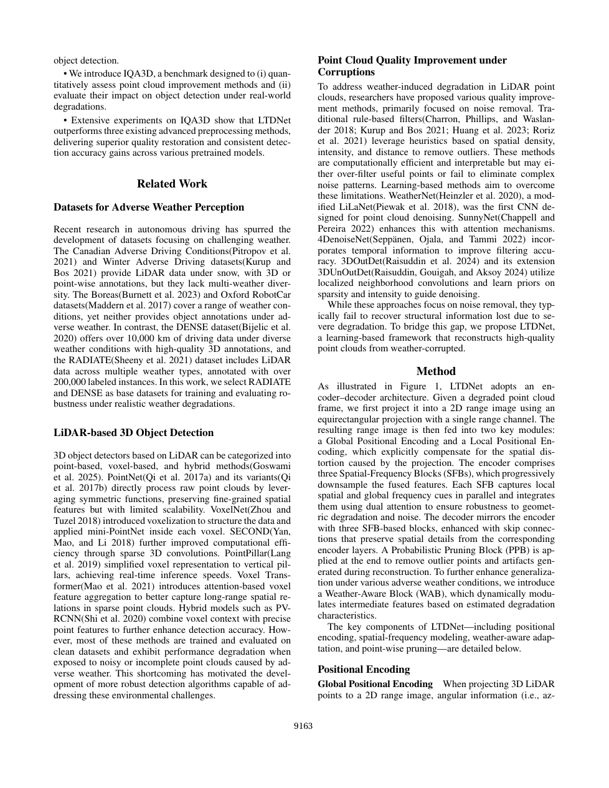
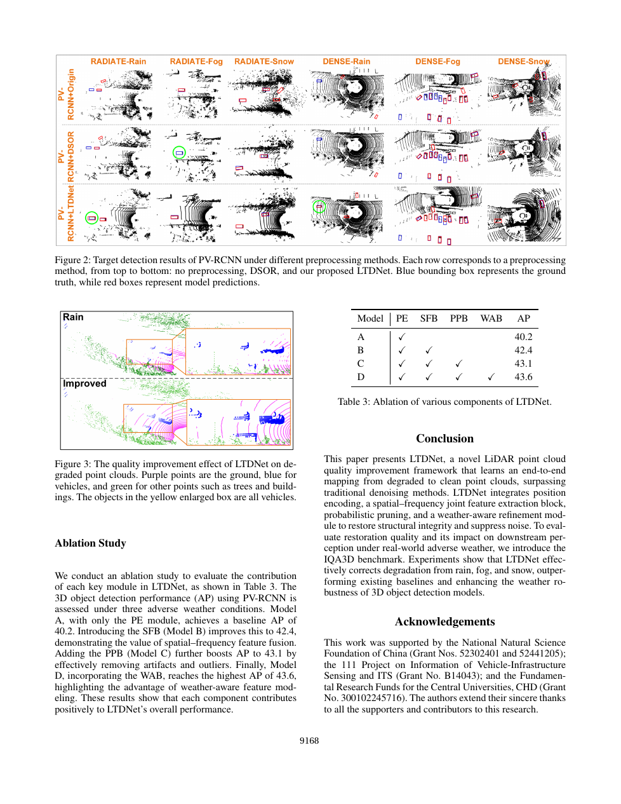

Robotics Research Reader · Stage 1
Weather-Robust LiDAR Perception: Point Cloud Restoration from Adverse Weather
材料覆盖范围：完整阅读当前 PDF 的摘要、正文、图表、实验、限制与结论，并视觉核对本页嵌入的关键原文页。原文件为
23949-AAAI26.SunC-CV.pdf。本页严格限于 Stage 1：只还原论文故事线，不读取代码，不用第三方解读补写。一、论文一句话在做什么
概括LTDNet 不只删除天气噪声，而是学习从退化 range image 到干净几何的端到端恢复，联合位置编码、空频特征、天气感知调制与概率剪枝；论文还提出 IQA3D 评测几何恢复和下游检测。 （Abstract；Introduction；Method overview）
二、Research Problem
具体问题：雨、雾、雪会同时产生噪声与结构缺失，单纯去噪不能恢复几何。 （Abstract；Introduction）
场景：在晴天训练的 3D 检测器处理真实恶劣天气点云。 （Abstract；Introduction）
重要性：下游模型输入质量直接决定有效距离与检测可靠性。 （Abstract；Introduction）
后果：物体轮廓缺失、误检漏检和精度下降。 （Abstract；Introduction）
三、Existing Methods & Gap
| 方法类别 | 原本怎么解决 | 作者指出的不足及影响 |
|---|---|---|
| 天气仿真增强 | 生成恶劣天气数据训练检测器 | 存在 synthetic-to-real domain shift。 |
| 规则/学习去噪 | 删除天气噪声点 | 通常不恢复由衰减和遮挡造成的结构损失。 |
| 现有评测 | 用去噪指标或单一数据集比较 | 缺少同时衡量几何恢复与真实下游检测影响的统一 benchmark。 |
概括作者认为真正缺少的是：缺少同时衡量几何恢复与真实下游检测影响的统一 benchmark。 （Introduction；Related Work）
四、Core Observation / Insight
- 作者区分“noise removal”与“structural restoration”：天气退化不仅加伪点，也造成有效点缺失。 （Introduction；Method）
- 因此网络必须同时用局部空间与全局频率信息恢复结构，并在输出端概率剪枝抑制重建伪影。 （Introduction；Method）
- 配对合成数据提供逐点 clean/degraded 对应，真实天气数据则通过下游检测验证实用影响。 （Introduction；Method）
五、Method：只看宏观逻辑
概括Input：退化点云投影得到单通道 range image。 （Method；framework figure）
概括Global/Local Positional Encoding 补偿等距柱状投影的空间畸变。 （Method；framework figure）
概括三层 Spatial-Frequency Blocks 并行提取局部空间与全局频率特征并由双 attention 融合。 （Method；framework figure）
概括Weather-Aware Block 调制中间特征；decoder 与 skip connections 重建。 （Method；framework figure）
概括Probabilistic Pruning Block 删除输出伪影，反投影为恢复点云。 （Method；framework figure）


概括相比已有方法，真正发生变化的核心位置是：三层 Spatial-Frequency Blocks 并行提取局部空间与全局频率特征并由双 attention 融合。 （Method）
六、Contributions
- Method：提出 LTDNet，从天气退化点云恢复结构与几何。 （Introduction，contributions）
- Dataset / Benchmark：提出 IQA3D，结合合成配对与真实天气序列。 （Introduction，contributions）
- Experiment：提出 DDI 几何改善指标，并在三个检测器和三种天气上比较。 （Introduction，contributions）
七、Experiments
- Dataset：DENSE-W、RADIATE-W；7:3 train/test，合成配对用于质量评估，真实序列用于检测。 （Experimental setup）
- Baselines：DSOR、4DenoiseNet、3D-UnOutDet。 （Experimental setup）
- Metrics：DDI、NR-F1、vehicle AP@0.5（0–80m/0–40m）。 （Experimental setup）
- 硬件：i7-12700、32 GB、2×2080 Ti；有消融、定性/定量、runtime。 （Experimental setup）
实验 1：Table 1：LTDNet 的 DDI 为 0.61–0.81，基线约 0.22–0.37；作者解释为恢复超过 60% 的几何退化。 （Experiments；相关 Figure/Table）
实验 2：Table 2：所有 detector/weather 组合中 LTDNet AP 最高，通常提升约 4–6 AP；例如 RADIATE-W rain 上 PV-RCNN 38.43→43.25。 （Experiments；相关 Figure/Table）
实验 3：运行时间：RADIATE-W 38 ms，DENSE-W 41 ms，论文称实时。 （Experiments；相关 Figure/Table）
实验 4：消融：PE-only AP=40.2，加入 SFB/PPB/WAB 后依次为 42.4/43.1/43.6。 （Experiments；相关 Figure/Table）
实验 5：直接观察直接观察：LTDNet 的 NR-F1 并非每个天气/数据组合都最高，优势主要集中在 DDI 与下游检测。 （Experiments；相关 Figure/Table）
八、Limitations
作者明确承认的 limitation
作者没有在 Conclusion 单列 limitation。 （Discussion / Conclusion / failure case）
从实验结果中直接可见，但作者没有明确称为 limitation 的现象
直接观察直接观察：几何 DDI 依赖 synthetic paired clean/degraded 数据；真实天气部分以检测 AP 而非 clean 几何对应评估。 （相关 Figure/Table）
九、Future Work / Research Implications
论文未明确说明论文未明确提出具体 future work。 （Conclusion）
十、论文逻辑链
概括现实问题：天气既加噪声也造成结构缺失。
概括现有方法：增强或去噪。
概括不足：domain shift，且去噪不恢复丢失几何。
概括观察：需要同时恢复空间结构并抑制伪影。
概括思想：学习 degradation-to-clean 映射。
概括方法：PE + SFB + WAB + PPB 的 encoder–decoder。
概括验证：IQA3D 的 DDI/NR-F1 与三检测器 AP。
概括结论：作者认为结构恢复比单纯去噪更能改善检测。
十一、第一遍阅读结束后，我应该记住的东西
- 概括解决恶劣天气点云的结构恢复，而不止噪声删除。
- 概括核心 gap 是已有去噪法不能恢复因信号衰减而丢失的几何。
- 概括最关键 insight 是质量改善应同时看 clean 几何对应和真实下游任务。
- 概括核心变化是空频联合恢复网络加概率剪枝。
- 概括最重要结果是 DDI 0.61–0.81，检测通常提高约 4–6 AP。
十二、暂时不要深入的内容
- 概括SFB 的空间/频率分支及 dual attention（Method, Fig. 1）。
- 概括WAB 天气条件估计与调制。
- 概括PPB 的概率建模与损失。
- 概括IQA3D 退化生成、DDI 对齐假设与补充材料。